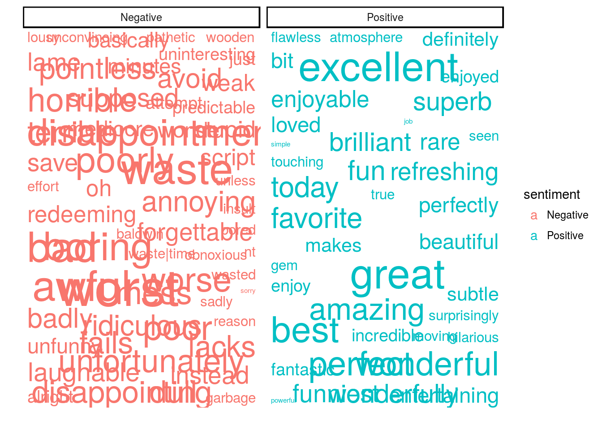
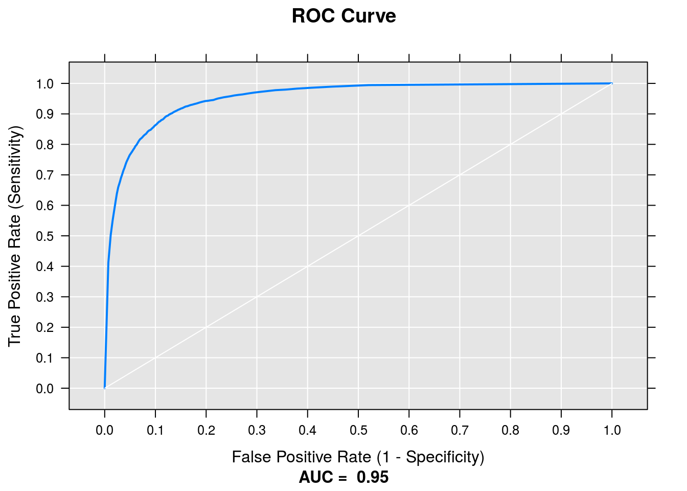
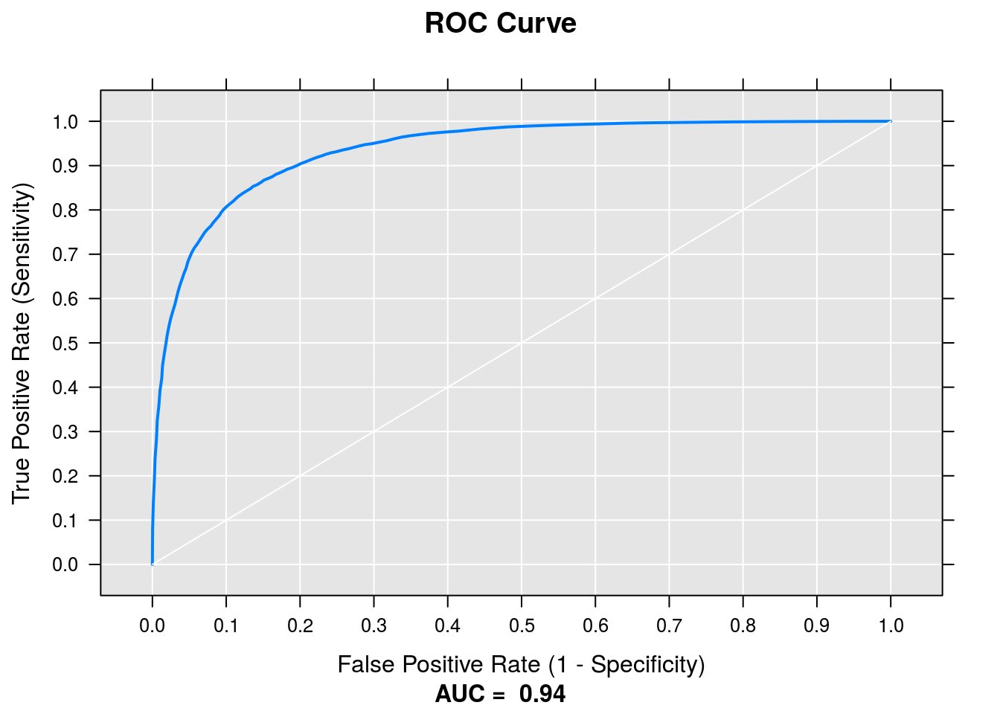
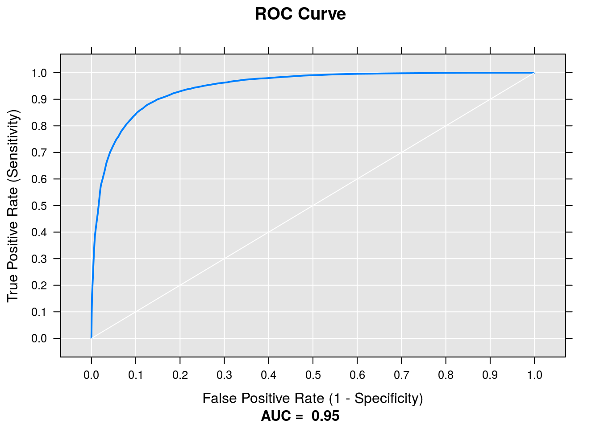

Chapter 6 Natural Language Processing
6.1 Text Classification
Let’s take a look at using MML to estimate a model that would be very hard to do with RevoScaleR.
In particular, there are virtually no functionality in RevoScaleR for handling large text data. We will use MML to transform text data into useful features that we can use in a logistic regression learner. In order to deal with the high cardinality of text data, we will use the penalized regression models in MML.
6.1.1 IMDB Data
Our data is taken from the paper Learning Word Vectors for Sentiment Analysis written in 2011 by Andrew L. Maas, Raymond E. Daly, Peter T. Pham, Dan Huang, Andrew Y. Ng, and Christopher Potts. The paper and data are available here: http://ai.stanford.edu/~amaas/data/sentiment/. I’ve already downloaded and converted the data into an XDF. Please see the 1-ingest-data.R script if you are interested in the ingestion process.
library(MicrosoftML)
library(tidyverse)
library(d3wordcloud)
train_xdf <- RxXdfData("data/imdb-train.xdf")
test_xdf <- RxXdfData("data/imdb-test.xdf")6.1.2 Feature Transformers
MicrosoftML has a set of functions for feature engineering. In this example, let’s take a look at creating sparse word vectors.
We’ll use the featurizeText function to convert our text data into numeric columns. In particular, we’ll ask for new columns with tri-grams after removing stopwords, punctuations, and numbers.
We can do this transform directly in our modeling call, and in particular, we’ll train logistic regression models and a fast gradient boosted tree model:
system.time(logit_model <- rxLogisticRegression(sentiment ~ reviewTran,
data = train_xdf,
l1Weight = 0.05,
l2Weight = 0.01,
mlTransforms =
list(featurizeText(
vars = c(reviewTran = "review"),
language = "English",
stopwordsRemover = stopwordsDefault(),
wordFeatureExtractor =
ngramCount(ngramLength = 3,
weighting = "tfidf",
maxNumTerms = 1e+09),
keepNumbers = FALSE,
keepPunctuations = FALSE)
)
)
)## Not adding a normalizer.
## Automatically converting column 'sentiment' into a factor.
## LBFGS multi-threading will attempt to load dataset into memory. In case of out-of-memory issues, turn off multi-threading by setting trainThreads to 1.
## Beginning optimization
## num vars: 4308438
## improvement criterion: Mean Improvement
## L1 regularization selected 28533 of 4308438 weights.
## Not training a calibrator because it is not needed.
## Elapsed time: 00:02:54.4185154
## Elapsed time: 00:00:54.5115498## user system elapsed
## 0.188 0.120 229.921system.time(fast_trees <- rxFastTrees(sentiment ~ reviewTran,
data = train_xdf,
mlTransforms =
list(featurizeText(
vars = c(reviewTran = "review"),
language = "English",
stopwordsRemover = stopwordsDefault(),
wordFeatureExtractor =
ngramCount(ngramLength = 3,
weighting = "tfidf",
maxNumTerms = 1e+09),
keepNumbers = FALSE,
keepPunctuations = FALSE)
)
)
)## Not adding a normalizer.
## Automatically converting column 'sentiment' into a factor.
## Making per-feature arrays
## Changing data from row-wise to column-wise
## Processed 25000 instances
## Binning and forming Feature objects
## Reserved memory for tree learner: 304827068 bytes
## Starting to train ...
## Not training a calibrator because it is not needed.
## Elapsed time: 00:01:10.5571151## user system elapsed
## 0.056 0.044 70.767Now that we have our trained model, we can do some visualizations. For example, for the elastic net, we can visualize the coefficients.
logit_cof <- coefficients(logit_model)
coefs <- data.frame(coef = logit_cof, word = names(logit_cof))
coefs <- tbl_df(coefs)
coefs <- coefs %>%
filter(word != "(Bias)") %>%
mutate(abs_value = abs(coef),
sentiment = ifelse(coef > 0, "Positive", "Negative"),
score = round(abs_value, 0)) %>%
arrange(desc(abs_value)) %>% slice(1:100)
library(ggplot2)
library(ggrepel)
coefs %>%
ggplot +
aes(x = 1, y = 1, colour = sentiment, size = score, label = word) +
geom_text_repel(segment.size = 0, force = 10) +
scale_size(range = c(2, 15), guide = FALSE) +
scale_y_continuous(breaks = NULL) +
scale_x_continuous(breaks = NULL) +
labs(x = '', y = '') +
theme_classic() +
facet_wrap(~sentiment)
Let’s try and makea more interactive visual. We’ll use purrr again to map our coefficients to the beautiful d3wordcloud package
coefs %>%
split(.$sentiment) %>%
purrr::map( ~ d3wordcloud(.$word, .$score, tooltip = TRUE)) -> d3_graphs
d3_graphs[[1]]d3_graphs[[2]]6.1.3 Testing the Logit Model
In order to predict our classifer on test data, we will use the mxPredict function from the MML package.
predictions <- rxPredict(logit_model, data = test_xdf, extraVarsToWrite = "sentiment")## Elapsed time: 00:00:25.9695782roc_results <- rxRoc(actualVarName = "sentiment", predVarNames = "Probability.1", data = predictions)
roc_results$predVarName <- factor(roc_results$predVarName)
plot(roc_results)
6.1.4 Testing the Fast Trees Model
predictions <- rxPredict(fast_trees, data = test_xdf, extraVarsToWrite = "sentiment")## Elapsed time: 00:00:29.8938884roc_results <- rxRoc(actualVarName = "sentiment", predVarNames = "Probability.1", data = predictions)
roc_results$predVarName <- factor(roc_results$predVarName)
plot(roc_results)
6.2 Neural Networks
Let’s try to estimate another binary classifier from this dataset, but with a Neural Network architecture rather than a logistic regression model.
In the following chunk, we call our neural network model, and set the optimizer to be a stochastic gradient descent optimizer with a learning rate of 0.2. Furthermore, we use the type argument to ensure we are learning a binary classifier. By default our network architecture will have 100 hidden nodes.
nn_sentiment <- rxNeuralNet(sentiment ~ reviewTran,
data = train_xdf,
type = "binary",
mlTransforms = list(featurizeText(vars = c(reviewTran = "review"),
language = "English",
stopwordsRemover = stopwordsDefault(),
keepPunctuations = FALSE)),
# acceleration = "gpu",
miniBatchSize = 4)## Not adding a normalizer.
## Automatically converting column 'sentiment' into a factor.
## Using: SSE Math
## Warning: Math acceleration mode not compatible with mini-batches. Setting batch size to 1.
## ***** Net definition *****
## input Data [74398];
## hidden H [100] sigmoid { // Depth 1
## from Data all;
## }
## output Result [1] sigmoid { // Depth 0
## from H all;
## }
## ***** End net definition *****
## Input count: 74398
## Output count: 1
## Output Function: Sigmoid
## Loss Function: CrossEntropy
## PreTrainer: NoPreTrainer
## ___________________________________________________________________
## Starting training...
## Learning rate: 0.001000
## Momentum: 0.000000
## InitWtsDiameter: 0.100000
## ___________________________________________________________________
## Initializing 1 Hidden Layers, 7440001 Weights...
## Estimated Pre-training MeanError = 0.704585
## Iter:1/100, MeanErr=0.694443(-1.44%), 123281.76M WeightUpdates/sec
## Iter:2/100, MeanErr=0.694329(-0.02%), 125708.18M WeightUpdates/sec
## Iter:3/100, MeanErr=0.694192(-0.02%), 126223.11M WeightUpdates/sec
## Iter:4/100, MeanErr=0.694030(-0.02%), 122886.14M WeightUpdates/sec
## Iter:5/100, MeanErr=0.694215(0.03%), 122435.11M WeightUpdates/sec
## Iter:6/100, MeanErr=0.693894(-0.05%), 124689.77M WeightUpdates/sec
## Iter:7/100, MeanErr=0.693471(-0.06%), 124035.94M WeightUpdates/sec
## Iter:8/100, MeanErr=0.692859(-0.09%), 122583.35M WeightUpdates/sec
## Iter:9/100, MeanErr=0.692376(-0.07%), 124059.98M WeightUpdates/sec
## Iter:10/100, MeanErr=0.691277(-0.16%), 125373.62M WeightUpdates/sec
## Iter:11/100, MeanErr=0.690757(-0.08%), 121531.60M WeightUpdates/sec
## Iter:12/100, MeanErr=0.689446(-0.19%), 124433.26M WeightUpdates/sec
## Iter:13/100, MeanErr=0.687619(-0.26%), 126394.10M WeightUpdates/sec
## Iter:14/100, MeanErr=0.685640(-0.29%), 122750.60M WeightUpdates/sec
## Iter:15/100, MeanErr=0.683191(-0.36%), 124343.16M WeightUpdates/sec
## Iter:16/100, MeanErr=0.680226(-0.43%), 125794.01M WeightUpdates/sec
## Iter:17/100, MeanErr=0.676299(-0.58%), 122731.56M WeightUpdates/sec
## Iter:18/100, MeanErr=0.671884(-0.65%), 123546.53M WeightUpdates/sec
## Iter:19/100, MeanErr=0.666806(-0.76%), 123488.72M WeightUpdates/sec
## Iter:20/100, MeanErr=0.660784(-0.90%), 124040.20M WeightUpdates/sec
## Iter:21/100, MeanErr=0.653908(-1.04%), 120503.42M WeightUpdates/sec
## Iter:22/100, MeanErr=0.645968(-1.21%), 126882.57M WeightUpdates/sec
## Iter:23/100, MeanErr=0.637465(-1.32%), 135168.28M WeightUpdates/sec
## Iter:24/100, MeanErr=0.628361(-1.43%), 131442.95M WeightUpdates/sec
## Iter:25/100, MeanErr=0.618374(-1.59%), 132633.83M WeightUpdates/sec
## Iter:26/100, MeanErr=0.607630(-1.74%), 134216.83M WeightUpdates/sec
## Iter:27/100, MeanErr=0.596812(-1.78%), 125134.96M WeightUpdates/sec
## Iter:28/100, MeanErr=0.585189(-1.95%), 120578.85M WeightUpdates/sec
## Iter:29/100, MeanErr=0.573419(-2.01%), 122527.99M WeightUpdates/sec
## Iter:30/100, MeanErr=0.561505(-2.08%), 132514.50M WeightUpdates/sec
## Iter:31/100, MeanErr=0.549777(-2.09%), 120517.41M WeightUpdates/sec
## Iter:32/100, MeanErr=0.538191(-2.11%), 123541.32M WeightUpdates/sec
## Iter:33/100, MeanErr=0.526569(-2.16%), 126636.69M WeightUpdates/sec
## Iter:34/100, MeanErr=0.515547(-2.09%), 124143.43M WeightUpdates/sec
## Iter:35/100, MeanErr=0.504761(-2.09%), 123055.91M WeightUpdates/sec
## Iter:36/100, MeanErr=0.494128(-2.11%), 123197.09M WeightUpdates/sec
## Iter:37/100, MeanErr=0.484511(-1.95%), 125135.73M WeightUpdates/sec
## Iter:38/100, MeanErr=0.474862(-1.99%), 122756.15M WeightUpdates/sec
## Iter:39/100, MeanErr=0.465674(-1.93%), 122876.37M WeightUpdates/sec
## Iter:40/100, MeanErr=0.456896(-1.88%), 124783.00M WeightUpdates/sec
## Iter:41/100, MeanErr=0.448901(-1.75%), 121760.39M WeightUpdates/sec
## Iter:42/100, MeanErr=0.441171(-1.72%), 122997.06M WeightUpdates/sec
## Iter:43/100, MeanErr=0.433480(-1.74%), 123051.94M WeightUpdates/sec
## Iter:44/100, MeanErr=0.426293(-1.66%), 123078.74M WeightUpdates/sec
## Iter:45/100, MeanErr=0.419575(-1.58%), 121552.74M WeightUpdates/sec
## Iter:46/100, MeanErr=0.413401(-1.47%), 121503.90M WeightUpdates/sec
## Iter:47/100, MeanErr=0.406957(-1.56%), 123305.25M WeightUpdates/sec
## Iter:48/100, MeanErr=0.401313(-1.39%), 122880.33M WeightUpdates/sec
## Iter:49/100, MeanErr=0.395543(-1.44%), 123718.70M WeightUpdates/sec
## Iter:50/100, MeanErr=0.390251(-1.34%), 124812.16M WeightUpdates/sec
## Iter:51/100, MeanErr=0.385156(-1.31%), 120727.29M WeightUpdates/sec
## Iter:52/100, MeanErr=0.380155(-1.30%), 124529.75M WeightUpdates/sec
## Iter:53/100, MeanErr=0.375252(-1.29%), 120880.86M WeightUpdates/sec
## Iter:54/100, MeanErr=0.371025(-1.13%), 123749.92M WeightUpdates/sec
## Iter:55/100, MeanErr=0.366597(-1.19%), 124759.17M WeightUpdates/sec
## Iter:56/100, MeanErr=0.362269(-1.18%), 124623.17M WeightUpdates/sec
## Iter:57/100, MeanErr=0.358292(-1.10%), 122364.78M WeightUpdates/sec
## Iter:58/100, MeanErr=0.354345(-1.10%), 123185.02M WeightUpdates/sec
## Iter:59/100, MeanErr=0.350553(-1.07%), 124192.87M WeightUpdates/sec
## Iter:60/100, MeanErr=0.346730(-1.09%), 124668.77M WeightUpdates/sec
## Iter:61/100, MeanErr=0.343272(-1.00%), 118709.90M WeightUpdates/sec
## Iter:62/100, MeanErr=0.339770(-1.02%), 122861.13M WeightUpdates/sec
## Iter:63/100, MeanErr=0.336230(-1.04%), 124964.10M WeightUpdates/sec
## Iter:64/100, MeanErr=0.333191(-0.90%), 127110.62M WeightUpdates/sec
## Iter:65/100, MeanErr=0.330051(-0.94%), 129673.59M WeightUpdates/sec
## Iter:66/100, MeanErr=0.326981(-0.93%), 125489.57M WeightUpdates/sec
## Iter:67/100, MeanErr=0.323995(-0.91%), 121677.17M WeightUpdates/sec
## Iter:68/100, MeanErr=0.321182(-0.87%), 125561.40M WeightUpdates/sec
## Iter:69/100, MeanErr=0.318367(-0.88%), 128463.47M WeightUpdates/sec
## Iter:70/100, MeanErr=0.315463(-0.91%), 127737.31M WeightUpdates/sec
## Iter:71/100, MeanErr=0.313039(-0.77%), 121736.55M WeightUpdates/sec
## Iter:72/100, MeanErr=0.310367(-0.85%), 124133.90M WeightUpdates/sec
## Iter:73/100, MeanErr=0.307799(-0.83%), 123346.86M WeightUpdates/sec
## Iter:74/100, MeanErr=0.305068(-0.89%), 125222.46M WeightUpdates/sec
## Iter:75/100, MeanErr=0.302958(-0.69%), 122067.92M WeightUpdates/sec
## Iter:76/100, MeanErr=0.300405(-0.84%), 130354.63M WeightUpdates/sec
## Iter:77/100, MeanErr=0.297983(-0.81%), 121103.98M WeightUpdates/sec
## Iter:78/100, MeanErr=0.295944(-0.68%), 123852.93M WeightUpdates/sec
## Iter:79/100, MeanErr=0.293907(-0.69%), 129011.84M WeightUpdates/sec
## Iter:80/100, MeanErr=0.291620(-0.78%), 131935.73M WeightUpdates/sec
## Iter:81/100, MeanErr=0.289745(-0.64%), 123613.06M WeightUpdates/sec
## Iter:82/100, MeanErr=0.287662(-0.72%), 128522.67M WeightUpdates/sec
## Iter:83/100, MeanErr=0.285591(-0.72%), 121631.79M WeightUpdates/sec
## Iter:84/100, MeanErr=0.283583(-0.70%), 123042.63M WeightUpdates/sec
## Iter:85/100, MeanErr=0.281815(-0.62%), 128366.97M WeightUpdates/sec
## Iter:86/100, MeanErr=0.279837(-0.70%), 129162.80M WeightUpdates/sec
## Iter:87/100, MeanErr=0.278120(-0.61%), 127484.00M WeightUpdates/sec
## Iter:88/100, MeanErr=0.276277(-0.66%), 127757.02M WeightUpdates/sec
## Iter:89/100, MeanErr=0.274533(-0.63%), 129199.10M WeightUpdates/sec
## Iter:90/100, MeanErr=0.272938(-0.58%), 126966.61M WeightUpdates/sec
## Iter:91/100, MeanErr=0.270917(-0.74%), 127917.72M WeightUpdates/sec
## Iter:92/100, MeanErr=0.269519(-0.52%), 123309.13M WeightUpdates/sec
## Iter:93/100, MeanErr=0.267711(-0.67%), 127397.42M WeightUpdates/sec
## Iter:94/100, MeanErr=0.266137(-0.59%), 128667.11M WeightUpdates/sec
## Iter:95/100, MeanErr=0.264770(-0.51%), 122467.54M WeightUpdates/sec
## Iter:96/100, MeanErr=0.262845(-0.73%), 120989.12M WeightUpdates/sec
## Iter:97/100, MeanErr=0.261513(-0.51%), 122038.13M WeightUpdates/sec
## Iter:98/100, MeanErr=0.259934(-0.60%), 123533.81M WeightUpdates/sec
## Iter:99/100, MeanErr=0.258394(-0.59%), 121401.90M WeightUpdates/sec
## Iter:100/100, MeanErr=0.257150(-0.48%), 125299.77M WeightUpdates/sec
## Done!
## Estimated Post-training MeanError = 0.256146
## ___________________________________________________________________
## Not training a calibrator because it is not needed.
## Elapsed time: 00:02:39.18478666.2.1 Scoring the Neural Net
We can similary score our results from the neural network model
predictions <- rxPredict(nn_sentiment, data = test_xdf, extraVarsToWrite = "sentiment")## Elapsed time: 00:00:13.5690285roc_results <- rxRoc(actualVarName = "sentiment", predVarNames = "Probability.1", data = predictions)
roc_results$predVarName <- factor(roc_results$predVarName)
plot(roc_results)
6.3 Exercises
- The Rscript Rscripts/9-Other-Sentiment-Datasets.R has two additional datasets with reviews and ratings (binarized). Try the above analysis on the other two datasets.